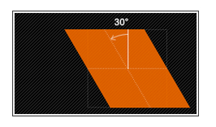
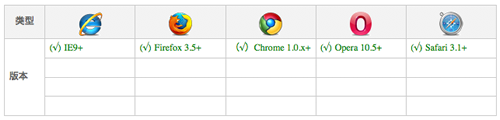

与CSS动画相关的知识有transform，transition，以及animation
transform
CSS3 2D Transform
translate() // 移动
translate(x,y)水平方向和垂直方向同时移动（也就是X轴和Y轴同时移动）translateX(x)仅水平方向移动（X轴移动）translateY(y)仅垂直方向移动（Y轴移动）
|
|
rotate() // 旋转
- 需先有
transform-origin属性的定义。transform-origin定义的是旋转的基点 - 如果设置的值为正数表示顺时针旋转，如果设置的值为负数，则表示逆时针旋转；
|
|
scale() // 缩放
scale(x,y)使元素水平方向和垂直方向同时缩放（也就是X轴和Y轴同时缩放）scaleX(x)元素仅水平方向缩放（X轴缩放）scaleY(y)元素仅垂直方向缩放（Y轴缩放)- 它们具有相同的缩放中心点和基数，其中心点就是元素的中心位置
- 缩放基数为1，如果其值大于1元素就放大，反之其值小于1，元素缩小
|
|
skew() // 扭曲，斜切变换
skew(x,y)使元素在水平和垂直方向同时扭曲（X轴和Y轴同时按一定的角度值进行扭曲变形）skewX(x)仅使元素在水平方向扭曲变形（X轴扭曲变形）skewY(y)仅使元素在垂直方向扭曲变形（Y轴扭曲变形）
|
|


matrix() //矩阵
|
|
transform-origin // 改变元素基点
- transform-origin(X,Y):用来设置元素的运动的基点（参照点）。默认点是元素的中心点。其中X和Y的值可以是百分值,em,px
- 其中X也可以是字符参数值left,center,right；Y和X一样除了百分值外还可以设置字符值top,center,bottom
支持transform的浏览器
IE9以下不支持

CSS3 3D Transform
3D Transform，与2D Transform相比，它给HTML元素在x-y平面加上了z轴；
激活元素的3D空间，需要perspective属性，写法有两种：
写法transform:perspective(600px)适用于单个元素，会对每一个元素做3D视图的变换
而perspective:600px的写法，需写在父元素上，然后以父元素的视角，对多个子元素进行3D变换，多个子元素共享同一个3D空间perspective的参数值，决定了3D效果的强烈程度，可以想象为距离多远去观察元素。值越大，观察距离就越远，同样的旋转值，看起来效果就弱一些；值越小，距离越近，3D效果就更强烈。
perspective-orgin
同样，对一个元素进行3D变换的时候，变换点都是元素的中心点，如果你想以其他的位置为变换点，那就可以用这个属性来做调整；
transform-style
这个参数用来共享父元素的3D空间；transform-style有两个值，一个是默认的flat；一个是preserve-3d
backface-visibility
backface-visibility 属性可用于隐藏内容的背面。默认情况下，背面可见，这意味着即使在翻转后，变换的内容仍然可见。但当 backface-visibility 设置为 hidden 时，旋转后内容将隐藏，确保只有正面可见；
transition
css属性值在一定时间内平滑地过渡；
transition主要包含四个属性值：
transition-property
执行变换的属性；应用所有属性用all；
transition-duration
动画持续的时间；注意要加单位s或者ms
transition-timing-function
在延续时间段，变换的速率变化；包括：
- ease：默认项，动画效果慢慢开始然后加速，到中点后再减速最后缓慢到达终点
- ease-in-out：与ease类似，加减速更柔和一些
- ease-in：开始比较慢，但是加速和停止曲线比较陡峭
- ease-out：开始较快，然后缓慢停止
- linear：线性平均速率，通常在color和opacity属性的变化上
- cubic-bezier函数：自定义速度模式;可以使用工具
transition-delay
变换延迟时间；delay的真正意义在于，它指定了动画发生的顺序，使得多个不同的transition可以连在一起，形成复杂效果。
注意:transition需要事件触发，所以没法在网页加载时自动发生。
例子：
简写：
分开写：
transition的高级写法：
注意其中的transition-duration只写了两个，那么第三个transition-property属性background-color就用循环到第一个，也就是说他的transition-duration值是1s；
transition的兼容写法
|
|
animation
定义keyframes
|
|
对于0%这个也可以用from关键字来替代，同样的可以用to来代替100%，过渡状态，你可以定义任何百分比；
animation应用
将animation应用到元素的属性写法，和transition差不太多：
animation-direction有四个值：
- normal：默认，从0%执行到100%
- reverse：动画从100%执行到0%
- alternate：动画在0%到100%之间往复执行;
- alternate-reverse与alternate一致，不过是从100%开始;
animation-play-state
有时，动画播放过程中，会突然停止。这时，默认行为是跳回到动画的开始状态;
如果想让动画保持突然终止时的状态可以使用animation-play-state: running;
浏览器支持
IE 10和Firefox（>= 16）支持没有前缀的animation，而chrome不支持，所以必须使用webkit前缀。实际运用中，代码必须考虑兼容写法：